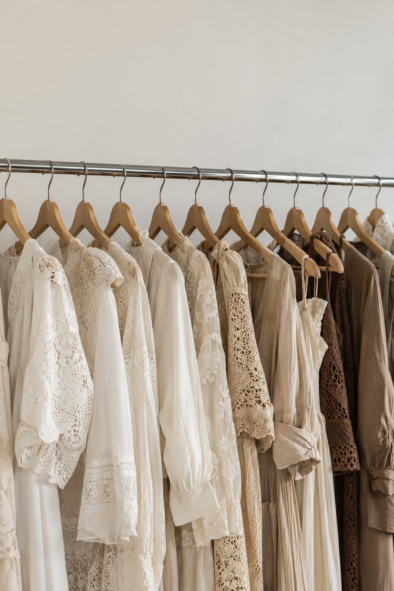

Clothes, considered.Light, texture, a little room to move.

An independently written local program, with no live events or external schedule.
Three material studies: lace, linen and wool. This independent edition looks at texture and structure rather than a real designer roster.
Choose a local edition to inspect its independently written program.
Save a viewing plan in this open page. No ticket, payment, reservation, email or account is created.
One independently generated photograph. The same image node returns to the cover, with the original crop and scroll position.
原片开场约7.5–11.5秒可见NOVA、米白底、DIGITAL / FASHION / WEEK®三行、黑色实字/描边字、右侧衣架照片与03/2026。原字库/照片未知；本页使用系统Impact等回退及独立生成照片，比例、裁切与入场参数为拟合。节目、材质说明、档期、本页观看计划、同图详情和标题重播均为补写；不执行作者Skill、生成链或真实票务。